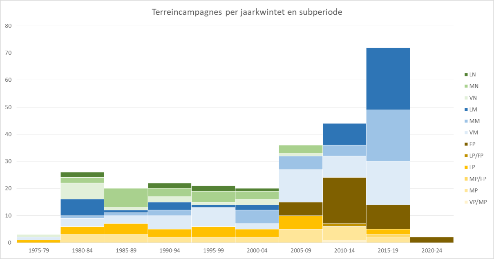

2.1 INLEIDING
In dit hoofdstuk bespreken we per periode de verspreiding van de vindplaatsen en wijze waarop deze aan het licht gekomen zijn. Er wordt tevens specifieke aandacht geschonken aan het terreinwerk dat na het opstellen van de eerste versie van de onderzoeksbalans werd verricht.
Deze analyse is in de eerste plaats uitgevoerd op basis van de CAI data, maar waar nodig en mogelijk bijgesteld op basis van literatuurgegevens. Zoals ook verder in de tekst wordt vermeld, zijn bepaalde ingaves in de CAI niet volledig correct en dient zich voor een aantal van hen een redactie aan. Voor de periode na 2007 zijn deze ingaves telkens systematisch nagekeken. Echter voor de oudere data bleek dit niet steeds haalbaar.
2.2 OVERZICHT VAN TOEVALSVONDSTEN, PROSPECTIEVONDSTEN EN OPGRAVINGEN
2.2.1 Het vroegpaleolithicum
Vroegpaleolithische sites zijn in Vlaanderen schaars. Het oudste niveau te Kesselt-Op De Schans bevat herwerkt materiaal dat op basis van hun stratigrafische positie mogelijk aan het vroegpaleothicum kan worden toegeschreven,. Een screening van de vindplaatsen die opgenomen zijn in de CAI en een vroegpaleolithische datering vermelden, leert dat het zo goed als altijd gaat om materiaal dat door middel van veldkarteringen aan het licht gekomen is (figuur 2.1). Een aantal wordt op basis van de aanwezigheid van een vuistbijl in het vroegpaleolithicum geplaatst. Of het materiaal wordt op basis van eenvoudige, robuuste afslagen en fysische verwering een oude datering toegedicht. Dat is bijvoorbeeld het geval voor de zogenaamde clactoniaansites die zich in het oosten van Vlaanderen bevinden. Deze dateringen zijn echter onvoldoende onderbouwd. Tot slot wordt voor een beperkt aantal vindplaatsen een datering vanaf het vroegpaleolithicum opgegeven, maar werd deze nuance niet overgenomen in de CAI. Dat is bijvoorbeeld het geval voor de vindplaats Steenbakkerstraat te Gistel1 die zich op de grens van de kustpolders bevindt. Sinds de vorige versie van de onderzoeksbalans zijn naast deze vindplaats nog drie ‘nieuwe’ vindplaatsen door middel van veldkartering in de CAI ingevoerd. Twee ervan blijken in feite om oudere meldingen te gaan en werden onlangs geredigeerd. Enkel te Genk – Kattevennen I gaat het om een nieuwe melding. Hier werd een vuurstenen artefact als mogelijke vroegpaleolithische pick2 is gedetermineerd3.

2.2.2 Het middenpaleolithicum
Ook voor het middenpaleolithicum geldt dat de meeste vindplaatsen bekend zijn door veldkartering. Het gaat dus eveneens om oppervlaktemateriaal. Voorbeelden zijn de grotere collecties die bijv. zijn ingezameld te Aalter-Hageland en Aalter-Nieuwendam4 of ’s Gravenvoeren – Snauwenberg5 en het resultaat zijn van een systematische zoektocht. Vaker nog betreft het een beperkt aantal vondsten, die geïsoleerd of samen met jonger materiaal zijn aangetroffen. Recente prospectievondsten (sinds 2007) zijn slechts in beperkte mate opgenomen in de CAI: het gaat met name om geïsoleerde of een beperkt aantal vondsten zoals te Bilzen - Wijngaardstraat I, Rotem – Pex, Lubbeek – Hazenput en Baarle-Hertog – Baarlebrugse Beemden 1. Te Vollezele – Hof te Put6 en Overboelare – Grote Buizemont7 zijn iets omvangrijkere collecties ingezameld, waarbij de artefacten zowel op basis van typologische als fysische kenmerken gedateerd werden. Tot slot vermelden we nog oppervlaktevondsten te Kesselt – Op de Schans en te Oekene – Rennevoordestraat. Op deze locaties werd aansluitend een opgraving uitgevoerd (zie verder).

De vondstlocaties die op figuur 2.2 als ‘opgraving’ staan aangeduid, betreffen grotendeels opgravingen gericht op jongere periodes. Het middenpaleolithisch materiaal werd er als losse vondst ingezameld, maar de onderzoeksstrategie werd niet bijgesteld. Hetzelfde geldt voor de vondsten die tijdens vooronderzoek werden aangetroffen. Vooral na 2007 zien we op dat vlak een toename. Dat was bijvoorbeeld het geval in Rekem, Tongeren-Plinius8, Sint-Andries, Aalter-Langevoorde9, Oedelem, Ver-Assebroek10 en Beernem11. Toevalsvondsten zijn dan weer vooral aangetroffen in zandwinningsgebieden en bij baggerwerken, bijvoorbeeld in Gent12, Merelbeke13, Ronse, Rotselaar14, Schulen15, Uitbergen en Zemst16. Hoewel geen enkele van deze laatste sites is opgegraven duiden ze op een groot potentieel aan goed bewaarde contexten, met name in de Vlaamse Vallei en het loess-gebied (zie verder). Het betreffen ook grotendeels oudere vondstmeldingen, terwijl voor de periode na 2007 slechts 1 zogenaamde toevalsvondst werd gemeld ter hoogte van het Bos van Aa.
Tegenover het te voorspellen potentieel aan middenpaleolithicum in Vlaanderen op basis van de geomorfologie van bepaalde regio’s (bijvoorbeeld voor de Vlaamse vallei17), is het aantal echt onderzochte sites bedroevend laag. Dat was reeds bij het opstellen van de eerste versie van de onderzoeksbalans het geval en deze situatie is nauwelijks gewijzigd. Opgravingen naar
middenpaleolithische contexten zijn in Vlaanderen enkel uitgevoerd te Kesselt18, Veldwezelt19, Vollezele-Congoberg20, Oosthoven21 en meer recentelijk op verschillende locaties te Kesselt22 en Veldwezelt23. Terwijl uitgebreidere evaluaties zijn uitgevoerd te Ruien (op de Kluisberg, waarbij de site evenwel vooral in Amougies (Henegouwen) ligt 24, Wommersom, de Kemmelberg25 en Lauw26 evenals op een aantal vindplaatsen in de oostelijke Vlaamse vallei en recenter te Oekene – Rennevoordestraat27.
Dit alles impliceert dat wetenschappelijk bronnenmateriaal van deze periode voorlopig vrij beperkt is. Ook dat is een observatie die reeds werd gemaakt bij het opstellen van de eerste versie van de onderzoeksbalans en nauwelijks gewijzigd is. Dit is een opmerkelijke vaststelling aangezien preventief onderzoek in het kader van malta-archeologie de laatste decennia sterk is toegenomen. Dit heeft weliswaar geleid tot een beperkt aantal nieuwe vindplaatsen, maar deze bestaan voornamelijk uit geïsoleerde vondsten. Onderzoek naar vindplaatsen met een rijker potentieel werd enkel uitgevoerd binnen een academisch kader (de verschillende vindplaatsen te Kesselt en Veldwezelt, aanvullend onderzoek te Oosthoven) of onder impuls van een lokale vereniging (zoals in de groeve te OekeneRennevoordestraat).
Een inhaalbeweging om te komen tot Europese standaarden is hier zeker aangewezen. De eerste stappen in die richting werden gezet vanuit academische hoek door de KULeuven met het Flemish Valley Survey Project dat gestart werd in 2015. Door middel van mechanische boringen wordt de pleistocene context van reeds gekende vindplaatsen – o.m. Rotselaar-Toren ter Heide en Schulensbroek – onderzocht28.
2.2.3 Het laatpaleolithicum
Op basis van de CAI lijkt het erop dat er behoorlijk wat laatpaleolithische vindplaatsen voorkomen in Vlaanderen. Echter, zoals we ook verder in de tekst zullen aangeven, is het aantal vindplaatsen dat overtuigend in het jong- of laatpaleolithicum kan geplaatst worden bijzonder beperkt. De verspreidingskaart geeft wederom vooral vindplaatsen weer die door middel van veldkartering aan het licht kwamen. Een steekproef van deze CAI records voor de periode voor 2007 leert dat het vaak om materiaal gaat dat een laat- of finaalpaleolithische toewijzing krijgt, maar in de CAI onder laatpaleolithicum gecatalogiseerd zijn. Daarnaast betreft het vaak materiaal waarvan de typotechnologische kenmerken eigenlijk slechts een algemene datering in het paleolithicum (of zelfs steentijd algemeen) toelaat. De vindplaatsen die aan het licht kwamen na 2007 zijn systematisch nagekeken. Slechts drie vindplaatsen zijn gedetecteerd door middel van veldkartering (Maasmechelen – Ven Onder de Berg29, Moerbeke – Heirweg I30 en Oud-Turnhout – Liereman I31). Het gaat telkens om weinig diagnostische stukken met een vermoedelijke datering vanaf het laatpaleolithicum. Dat geldt overigens ook voor vindplaatsen die bestaan uit losse vondst(en) aangetroffen bij vooronderzoek (Dilbeek - Wolsemveld32, Deurne – Park Groot Schijn123). De vindplaats Bilzen –
Spelverstraat werd aangetroffen tijdens een opgraving gericht op jongere periodes. De kleine verzameling wordt door de onderzoekers op basis van typotechnologische kenmerken eerder tot de federmessercultuur gerekend.33 Dat geldt eveneens voor de vindplaats Kasterlee – Binnenpad waar een ensemble van 167 artefacten werd ingezameld. Op basis van technologische kenmerken werd deze algemeen in het laatpaleothicum gedateerd, maar waarschijnlijk eerder aansluitend aan de federmessercultuur. Omwille van de aaanwezigheid van vorstbreuken wordt een datering voor de Jonge Dryas als plausibel geacht.34 Nijlen- Varenheuvel 1 is de enige vindplaats waar gericht onderzoek werd verricht naar een mogelijke laatpaleolithische aanwezigheid. De vindplaats was eerder gekend aan de hand van oppervlaktevondsten maar werd in 2006 en 2007 verder gewaardeerd aan de hand van verkennende boringen, proefputten- en sleuven en een kleine opgraving. Alhoewel een deel van het materiaal in stratigrafische positie werd aangetroffen, bleek het zich evenwel in een secundaire positie te bevinden en deels vermengd met jonger materiaal. De datering blijft daarom onzeker. De aanwezigheid van vorstbreuken op een deel van het materiaal wijst wellicht wel op een datering voor de Jonge Dryas. Één papegaaibeksteker kan mogelijk op basis van typologische gronden tot het laatpaleolithicum toegewezen worden.126 Net als voor het middenpaleolithicum trekken we eenzelfde conclusie voor het laatpaleolithicum. Ondanks de algemene toename aan archeologisch (voor)onderzoek, zijn sinds de eerste versie van de onderzoeksbalans dus nauwelijks nieuwe vindplaatsen aan het licht gekomen.

2.2.4 Het finaalpaleolithicum
Voor het finaalpaleolithicum is de toestand iets rooskleuriger. Toevalsvondsten uit deze periode zijn relatief zeldzaam, vermoedelijk ook omdat het materiaal niet gemakkelijk herkend wordt door nietspecialisten, maar dit geldt voor zowat de gehele prehistorie.
Bij amateurarcheologen zijn door veldkarteringen wel verschillende finaalpaleolithische sites ontdekt
(bijv. T. Caris, H. De Bock, A. Goossens, J. Carolus, M. De Meireleir, R. Maes, J. Semey, G. Van der Haegen, L. Van Vlaenderen, C. Verbeek), waarvan er sommige zijn geïnventariseerd in het kader van licentiaatsthesissen35, en in het kader van het AIV-project aan de UGent. Meermaals gaven ze ook aanleiding tot terreinonderzoek, bijvoorbeeld in Merksplas, Meer, Zolder, Zonhoven en Weelde. Sinds het opstellen van de eerste versie van de onderzoeksbalans werden op twaalf locaties finaalpaleolithische vondsten ingezameld door middel van veldkartering. Het gaat zowel om vindplaatsen waar in de nabije omgeving reeds eerder vondsten waren aangetroffen, als een beperkt aantal nieuwe vindplaatsen. Het valt op dat ze zich voornamelijk in het oosten van het land situeren. Naar datering toe dient ook voor deze vindplaatsen enig voorbehoud genomen te worden. Omwille van beperkte aantallen en/of beperkte diagnostische kenmerken geldt voor de meeste dat de datering onzeker blijft. Dit met uitzondering van de vindplaats Ravels – Gilbert Mulliedreef36. Het gaat in feite om een oudere collectie die pas na de publicatie van de eerste versie van de onderzoeksbalans werd ingegeven in de CAI. De omvangrijke verzameling (500 stuks) bevat diagnostische stuks zoals
federmesserspitsen. Daarnaast zijn er een aantal vindplaatsen waar het materiaal mogelijk kan gelinkt worden aan een Usselobodem, zoals te Maasmechelen – Opgrimbie I37.
Daarnaast zien we dat voor deze periode toch relatief meer vindplaatsen gekend zijn dankzij vooronderzoek en/of opgravingen, dan voor de voorgaande periodes. Meer systematische prospectie met ingreep in de bodem van finaalpaleolithische sites vindt pas plaats sinds de jaren 1990, eerst door proefputten (bijv. in Ruilverkaveling Weelde), vanaf 1999 ook door boringen, eerst in Meer38, later meer systematisch in de Kempen39 en in de Scheldevallei40. In datzelfde decennium start ook het booronderzoek op de site van Verrebroek41, weliswaar in hoofdzaak op mesolithische sites, maar met een systematische zoektocht naar paleobodems en paleolithische niveaus42. Tijdens het vooronderzoek in Sint-Kruis-Winkel, Moervaart-Zuid en Evergem-Kluizendok is eerst gekeken naar bodemgesteldheid op basis van proefsleuven, waarna plaatsen met potentieel zijn uitgeboord, helaas steeds met beperkt resultaat43.
De afgelopen jaren wordt het steentijdluik steeds systematischer meegenomen tijdens vooronderzoeken in het kader van vergunningsplichtige maatregelen. Het resultaat van deze toenemende aandacht kan op dit moment nog niet goed ingeschat worden. Op basis van een eerste inschatting, lijken ze voornamelijk betrekking te hebben op mesolithische vindplaatsen en worden finaalpaleolithische vindplaatsen slechts in beperkte mate herkend. Sinds de eerste versie van de onderzoeksbalans blijken, naast de hierboven vermelde oppervlaktevindplaatsen, 27 nieuwe vindplaatsen bijgekomen. Echter achttien vindplaatsen hebben betrekking op vooronderzoeken waarbij (mogelijk) finaalpaleolithisch materiaal als losse vondst is aangetroffen tijdens een proefsleuvenonderzoek. Slechts twee44 vindplaatsen blijken het resultaat van een gericht archeologisch booronderzoek. Zo werden o.m. op diverse locaties te Lommel – Kristalpark III finaalpaleolithische artefacten opgeboord45. Daarnaast vermelden we Oud-Turnhout – Bergstraat IV138. Nochtans neemt het aantal booronderzoeken dat zich richt op het detecteren van steentijdvindplaatsen stelselmatig toe sinds de eerste versie van de onderzoeksbalans. Deze lijken vaak heel erg gericht op de top van het bodemprofiel, terwijl de aandacht voor afgedekte, laatglaciale bodems en mogelijke sites daarin minder aan bod komt. Dit kan een mogelijke verklaring zijn.
De meeste opgravingen van finaalpaleolithische sites voor 2007 zijn beperkt gebleven tot kleine arealen, bijvoorbeeld in Merksplas, Meer I, Zolder, Helchteren, Harelbeke en Verrebroek Dok 2. Wat grotere opgravingen vonden plaats in Meer II, Meer IV, Doel Deurganckdok zone B en Zonhoven, terwijl zeer grootschalig werd opgegraven in Rekem, Weelde en Klein-Sinaai Baudeloo-abdij, Lommel en Tongeren. De opgravingsmethode op al deze sites varieerde naargelang de bewaringstoestand en de tijdsdruk, van nauwkeurige driedimensionele registratie van individuele stukken (Meer II en IV, Rekem, Klein-Sinaai, Verrebroek Dok 2, Doel, Lommel-Maatheide 1 en deels ook Zonhoven-Molenheide), over inzameling per kwart vierkante meter in Lommel-Maatheide, Tongeren-Plinius en ZonhovenMolenheide, tot vierkante meters in Weelde-Eindegoorheide.
Sinds de eerste versie van de onderzoeksbalans blijken slechts een beperkt aantal opgravingen uitgevoerd te zijn op finaalpaleolithische vindplaatsen. Het gaat o.m. om de finaalpaleolithische
clusters Ruien-Rosalinde46, Oudenaarde – Markt47 en Ronse – Pont West48. In de bespreking van de laatpaleolithische vindplaatsen vermelden we tevens reeds het onderzoek te Kasterlee-Binnenpad49 en Bilzen – Spelverstraat50 waar mogelijk finaalpaleolithische clusters werden aangetroffen. Het gaat hier weliswaar om vindplaatsen die eerder ‘toevallig’ aan het licht kwamen tijdens onderzoek naar jongere periodes. Een observatie die overigens ook opgaat voor de eerder opgegraven sites te KleinSinaai Baudeloo-abdij51, Tongeren-Plinius52, Rekem53, Gent-Tweekerkenstraat54. Recent, gericht onderzoek naar finaalpaleolithische vindplaatsen dat in een opgraving resulteerde, blijkt eigenlijk enkel op te gaan voor Verrebroek – Dok 255, Doel – Deurganckdok zone B56, Lommel – Maatheide57 voor de periode voor 2007 en te Lommel-Kristalpark en Beveren – Logistiek Park Waasland (hierna Beveren – LPW genoemd) 151 voor de periode na 2007. Deze onderzoeken zijn echter nog niet volledige gerapporteerd.
2.3 EVOLUTIE VAN HET TERREINWERK OP SITES MET EEN PALEOLITHISCHE COMPONENT IN DE LAATSTE 40 JAAR
2.3.1 Inleiding
In dit hoofdstuk wordt ingegaan op de evolutie van de onderzoekspraktijk en niet op inhoudelijke ontwikkelingen. Hiervoor werd de werkwijze zoals deze in de eerste versie van de onderzoeksbalans werd gehanteerd grotendeels overgenomen. Daarin werd beargumenteerd dat voor een ‘objectieve’ diachronische kijk op de ontwikkelingen van het paleolithische terreinwerk in Vlaanderen grotendeels gebruik kon gemaakt worden van de artikelen in het tijdschrift Notae Praehistoricae. Voor een periode van circa 30 jaar (1979-2007) geeft dit tijdschrift een goed beeld van het terreinwerk dat plaatsgevonden heeft op steentijdsites in België. Jaarlijks werd hierin immers een overzicht gegeven van de opgravingscampagnes van het voorbije seizoen (seizoenen 1979 en 1980 in volume 1 van 1981; seizoenen 1984 en 1985 samen in volume 5 van 1985, daarna valt de publicatiedatum meestal samen met het opgravingsjaar). Hoewel dit niet volledig exhaustief zal zijn, zijn hierin zeker de belangrijkste campagnes goed geregistreerd en kan deze bron tot hiertoe als representatief beschouwd worden. Voor de periode tussen 2007 en 2019 rapporteren bedrijven die werken binnen de projectarcheologie de meeste prehistorische opgravingen, maar er zijn ook enkele terreincampagnes waarvan de resultaten niet terug te vinden zijn in de Notae Praehistoricae. Bij enkele gevallen is dit te wijten aan de recente datum van uitvoering. Daarom worden de gegevens vanaf 2007 aangevuld met informatie uit de CAI, en zijn ook meerperiodensites met een belangrijke paleolithische component betrokken. Dit geldt evenwel niet voor de Waalse sites: voor de ontwikkelingen van het paleolithische terreinwerk in dit gewest hebben we ons enkel gebaseerd op de artikelen in het tijdschrift Notae Praehistoricae.
Voor deze analyse hebben we dus enkel verslagen van archeologische terreincampagnes bekeken. Zuiver post-excavation onderzoek werd uit de referenties geweerd, net als de artikelen die betrekking hebben op buitenlandse sites. Vervolgens is deze lijst geïndexeerd op gewest, archeoregio, periode,
subfase (vroeg/midden of laat/finaal paleolithicum), type project (prospectie, waardering, opgraving) en type uitvoerende instelling (onderwijsinstelling, overheidsinstelling, …). Voor de bespreking van evoluties over de jaren heen hebben we gebruik gemaakt van vijfjaarlijkse periodes (zogenaamde jaarkwintetten), te beginnen in 1975. De recente prospectie op Lommel – Kristalpark III uit 2020 is opgenomen in het jaarkwintet 2020-2024, maar deze is uiteraard nog niet afgerond. Vervolgens werd deze databank onderworpen aan een kleine kwantitatieve analyse.
2.3.2 Bespreking van de onderzoeken per periode
Misschien is het nuttig om het paleolithisch onderzoek in Vlaanderen eerst wat te kaderen binnen het algemene steentijdonderzoek in Belgische context (figuur 2.5). Het aantal terreincampagnes op sites met een paleolithische of neolithische component wordt sterk beïnvloed door het grottenonderzoek in het zuiden van het land. Bij de sites met een mesolithisch component domineert het onderzoek op Vlaamse bodem.
updaten onderzoeksbalans
Onderstaande grafiek (figuur 2.6) is aangemaakt o.b.v. een excel-bestand, met de achterliggende numerieke gegevens. Deze grafiek is (ongeveer) hetzelfde als figuur 2.5.
Wanneer nieuwe gegevens worden toegevoegd aan dit bestand, wordt de grafiek automatisch geactualiseerd.
Wanneer we dit onderzoek uitzetten over de laatste 40 jaar worden opmerkelijke trends zichtbaar (figuur 2.7). Terwijl voor Vlaanderen de hoeveelheid rapportages van terreincampagnes min of meer stabiel bleef (20 tot 30 per jaarkwintet), kende het zuiden van het land aanvankelijk een geleidelijke groei, met een piek in de jaren 90, maar met een duidelijke terugval daarna. Voor specifiek het paleolithicum is deze trend zeer uitgesproken. Na 2004 maken de rapportages m.b.t. paleolithische terreincampagnes in het zuiden van het land een zeer grote terugval: van 13 naar 7 tussen 2005 en 2009. De laatste 10 jaar zijn er zelfs amper steentijdcampagnes gemeld in Wallonië/Brussel (n=3). Het is natuurlijk hier niet de plaats om de balans voor Wallonië op te maken, laat staan er een verklaring voor te geven.

Wanneer enkel naar het steentijdonderzoek in Vlaanderen wordt gekeken, en we dit binnen de grote periodes opsplitsen in subfases (vroeg-, midden-, laat-, …), komt hieruit wel wat variatie naar voren, (figuur 2.8). Algemeen gezien valt een sterke stijging op in het aantal sites sinds de opkomst van de
Malta-onderzoek (te merken in het jaarkwintet 2005-2009). Binnen de paleolithische subfases (Figuur 8) is er vanaf die periode een sterk overwicht van gerapporteerde sites met een finaalpaleolithische component, maar terreinwerk op midden- en laatpaleolithicum blijft doorheen de jaren vrij stabiel en deze zijn vooral het resultaat van academisch onderzoek. Omdat het hier om kleine aantallen gaat, zijn deze trends natuurlijk sterk afhankelijk van meerjarige campagnes op eenzelfde site in een bepaald jaarkwintet (Figuur 9). Voor een periode van ca. 25 jaar (1979-2005) zien we dat deze een groot percentage van het totaal uitmaken: hieronder vallen bijvoorbeeld de opgravingen in Rekem in het midden van de jaren 1980, in Veldwezelt rond de eeuwwisseling en in Lommel-Maatheide tussen 2003 en 2008. Sinds de opkomst van de Malta-archeologie is er een sterke stijging in de eenmalig gerapporteerde sites, die vanaf 2005-2009 dan weer een grote invloed op de grafiek uitoefenen. Uit de eerdere bespreking van de vindplaatsen en aard van het onderzoek per periode bleek echter dat het gros van deze vindplaatsen het resultaat is van ‘toevallige’ vondsten die tijdens onderzoek naar jongere periodes zijn aangetroffen, waarbij slechts bij een minderheid vervolgens de onderzoeksstrategie werd aangepast. De kwantitatieve toename impliceert dus niet meteen een toename aan gelijklopende toename aan (potentiële) inhoudelijke kennis.

2.3.3 Bespreking van de onderzoeken per onderzoeksmethode
Samen met de opkomst van de Malta-archeologie, zien we de laatste jaren een groeiende investering in prospectie- en waarderingscampagnes. Ook dit komt tot uiting in de rapporteringen in Notae Praehistoricae en de CAI (Figuur 10). De prospecties die tijdens de eerste helft van de jaren ’80 gerapporteerd worden zijn vooral studies op grote collecties die door amateurarcheologen waren verzameld. Nadien zetten ook professionele archeologen verschillende prospectie- en waarderingscampagnes op, ondermeer in functie van inventarisatie- en beschermingsprojecten. Meestal gaat het daarbij om meerperiodeprojecten, waarbij het paleolithicum ook aan bod komt, maar niet uitsluitend. Het middenpaleolithicum in Vlaanderen is vooral bekend uit prospectie door vrijetijdsarcheologen, in het bijzonder in de Limburgse leemgroeves, bij opspuitingen in de Vlaamse Vallei of via veldprospectie, terwijl opgravingen en een meer systematische evaluatie grotendeels beperkt zijn tot het onderzoek van de KULeuven in het oosten van Vlaanderen.
)
2.3.4 Bespreking van de onderzoeken per type uitvoerder
Als laatste oefening hebben we gekeken naar het type instelling die (hoofd)uitvoerder was van de projecten die zijn gerapporteerd (Figuur 11). Voor het middenpaleolithicum is dit duidelijk de KULeuven, en sinds 2005-2009 rapporteert ook de privésector over vondsten uit deze subfase. Zij het dat het dan enkel om geïsoleerde vondsten gaat. Prospecties of opgravingscampagnes gericht op vroeg- of middenpaleolithicum zijn nog niet uitgevoerd door de privésector, wat op zich verwonderlijk is gezien ook grootschalige ingrepen – zoals ontginningsactiviteiten – in het kader van het vergunningstraject onderworpen zijn aan de archeologische wetgeving. Dit lijkt er op te wijzen dat de impact van dergelijke werken op afgedekte paleolithische vindplaatsen onderbelicht wordt. Op basis van een navraag bij een aantal erfgoedconsulenten en screening van een aantal dossiers blijkt dat deze vraagstelling uitzonderlijk wel wordt meegenomen bij de start van een vooronderzoek. Maar dat er tijdens de uitvoering tegen praktische en economische problemen (bijv. de impact op de latere ontginning) worden aangelopen en het verdere prospectief onderzoek naar paleolithische niveaus wordt losgelaten.
Voor het laat- en finaalpaleolithicum zit de expertise meer verspreid. Terwijl dit tot in de jaren 80 ook hoofdzakelijk door de KULeuven werd onderzocht (en in Meer ook nog door het Museum voor middenAfrika in Tervuren), is dit in de jaren 1990 vooral door het IAP (later VIOE) overgenomen, weliswaar vaak in samenwerking met KULeuven. Ook de UGent voerde regelmatig finaalpaleolithisch terreinwerk uit, in combinatie met onderzoek naar het mesolithicum, waarbij altijd veel aandacht gaat naar de studie van het paleomilieu. De institutionele ontwikkelingen komen nog sterker tot uiting wanneer we kijken naar de evolutie van het steentijdonderzoek in het algemeen over de laatste 40 jaar (Figuur 12). De aanvankelijke dominantie van KULeuven is over de jaren heen duidelijk afgenomen, omgekeerd zien we het terreinwerk vanuit UGent sinds midden jaren 1980 toenemen. Tussen de jaren 1990 en begin jaren 2000 neemt ook de Vlaamse overheid (AOE) in toenemende mate initiatieven tot terreinwerk op paleolithische sites. De terreincampagnes van zowel de onderwijs- als de overheidsinstellingen zijn echter (zeer) fel afgenomen na de opkomst van de privésector: het gaat tegenwoordig voornamelijk over enkele onderzoeksprojecten.

Demey 2011.↩︎
Bifaciaal werktuig met een langwerpige, gepunte vorm en dikke drie- of vierhoekige doorsnede.↩︎
Genk Kattevennen I. https://id.erfgoed.net/waarnemingen/980453 (geraadpleegd op 11 mei 2021).↩︎
Crombé & Van der Haegen 1994a, 29-37.↩︎
Kolen et al. 1999.↩︎
Beeckmans et al. 2010.↩︎
Van Liefferinge 2007, 16-17.↩︎
Bink 2007.↩︎
Vandendriessche & Crombé 2019c.↩︎
Ryssaert et al. 2010.↩︎
Noens et al. 2013.↩︎
Crombé & Van der Haegen 1994b.↩︎
Crombé 1994.↩︎
Van Peer 1982a, 238-254.↩︎
Van Peer 1979, 1-10.↩︎
Van Peer & Smith 1990, 157-171.↩︎
Van Peer 1986, 157-176; Van Peer & Smith 1990, 157-171.↩︎
Lauwers & Meijs 1985, 123-129; Vroomans et al. 2006; Van Baelen et al. 2007, 19-26; Van Baelen 2014.↩︎
Bringmans et al. 2000, 7-19; Bringmans 2006.↩︎
Vynckier & Vermeersch 1988, 133-139.↩︎
Van Peer & Verbeek 1994, 3-11; Ruebens 2005.↩︎
Lauwers & Meijs 1985, 123-129; Vroomans et al. 2006; Van Baelen et al. 2007, 19-26; Van Baelen 2014.↩︎
Bringmans et al. 2000, 7-19; Bringmans 2006.↩︎
Crombé 1994, 7-42.↩︎
Ulrix-Closset et al. 1981.↩︎
Gijselings & Doperé 1983, 4-24.↩︎
Goderis & Hameeuw 2011; Hameeuw et al. 2012.↩︎
Van Peer et al. 2017; Van Peer 2020.↩︎
Ven Onder de Berg: https://id.erfgoed.net/waarnemingen/160764 (geraadpleegd op 11 mei 2021).↩︎
Heirweg I: https://id.erfgoed.net/waarnemingen/162320 (geraadpleegd op 11 mei 2021).↩︎
Noens & Laloo (red.) 2013.↩︎
Sevenants 2009. 123 Janssens 2013.↩︎
Habermehl et al. 2014.↩︎
Van der Veken 2019, 23-40. 126 Van Peer et al. 2007.↩︎
Geerts 1984, 17-22; Verbeek 1994; Ameels 1993; Sergant 1995; Bats & De Reu 2006, 171-176.↩︎
Gilbert Mulliedreef https://id.erfgoed.net/waarnemingen/980551 (geraadpleegd op 12 mei 2021).↩︎
Kikbeek 4 https://id.erfgoed.net/waarnemingen/209008 (geraadpleegd op 12 mei 2021) & Opgrimbie 1 https://id.erfgoed.net/waarnemingen/50086 (geraadpleegd op 12 mei 2021).↩︎
De Bie 2000.↩︎
Van Gils & De Bie 2006, 7-16.↩︎
Bats et al. 2006, 75-100.↩︎
Crombé & Meganck 1996, 101-115; Crombé 1998b, 29-40.↩︎
Crombé 2005.↩︎
Ryssaert et al. 2007, 69-74.↩︎
In de CAI wordt tevens de vindplaats Dilsen-Stokkem – Heilderveld vermeld. Uit het rapport van het vooronderzoek lijkt het eerder te gaan om een aantal vondsten die tijdens het proefsleuvenonderzoek werden aangetroffen en wordt er geen archeologisch booronderzoek gerapporteerd (Celis et al. 2016).↩︎
Van Neste et al. 2009; Van der Waa & Willems 2019. 138 Meirsman 2008.↩︎
Vandendriessche & Crombé 2019b.↩︎
Crombé et al. 2018.↩︎
Vandendriessche et al. 2016.↩︎
Van der Veken (red.) 2019.↩︎
Habermehl et al. 2014.↩︎
Vanmoerkerke & De Belie 1984, 1-13.↩︎
Bink 2007.↩︎
Lauwers 1985a, 557-559.↩︎
Ryssaert et al. 2003, 45-53.↩︎
Crombé et al. 1999b; Crombé 2005; Perdaen & Ryssaert 2002; Perdaen 2004.↩︎
Crombé et al. 2000; Perdaen 2004.↩︎
De Bie & Van Gils 2006a en b; Geerts et al. 2006; Geerts et al. 2008. 151 Perdaen et al. in voorbereiding.↩︎